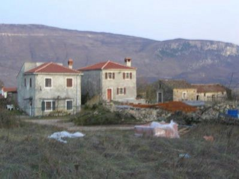

 Bila je minuta prije pet kada sam zaustavio automobil uz cestu Čepić-Šušnjevica nedaleko od Germini i pješke krenuo prema Brdu, selu na vrh brda, s kojeg se preko dana, a i noći, kao lanterna uz morsku obalu, nazire visok zvonik. Sunce je već dobrano zašlo za brdima, sumrak se sve više hvata, u daljini se vide i prve upaljene žarulje javne rasvjete, pa ubrzavam hod kako bih ipak učinio pokoji snimak. Ubrzo sam u Kostrčanima, selu u kojem je prije šezdesetak godina, zajedno s okolnim zaseocima živjelo oko 500 duša, mahom Istrorumunja ili Ćiribiraca.
Danas se doimlje pustim, većina kuća je zatvorena, dosta je ruševina, ali zapažam i dosta obnovljenih domova. Usred sela mala, lijepo obnovljena kapelica, a lavež pasa daje naslutiti da ono nije potpuno mrtvo, što mi uskoro potvrđuje Mirjana Peculić, koju je vjerojatno zaintrigiralo tko se u smiraj dana šulja oko njenog doma. Od ljubazne žene doznah da u Kostrčanima danas stalno žive četiri obitelji, preko vikenda nešto više, a najviše tijekom ljeta, kada u svoje domove dolaze iseljenici iz Amerike. Oni obnavljaju i proširuju svoje domove, neke kuće su prodane, čiji vlasnici također svraćaju ljeti privučeni mirom i ljepotom prirode kraja iznad Čepićke doline, odakle Učka izgleda impresivno.
Dio njih tada stanuje i u kamping kućicama. Od Mirjane doznajemo da je kapelica obnovljena 2002. godine i uz pomoć njihovih Amerikanaca, koji su veoma vezani uz svoj zavičaj. Na pitanje da li govori istrorumunjski uzvraća da razumije dosta, ali da joj mama s kojom živi govori odlično.
Napuštam Kostrčane i hitam prema Brdu. Začas je iza mene ruševina nekadašnje školske zgrade, u kojoj se nikada više neće čuti dječji žagor i cika. Mrak se sve više spušta, pa nakon desetak minuta na križanju putova na putokazu jedva čitam da lijevo put vodi za Zatku, a desno prema Brdu i Zankovcima. Uz samo križanje bijeli se druga kapelica, a uz veliki napor uspijevam tek pročitati da je kapelu 1992. godine obnovio izvjesni Serafino Tercovich iz Amerike.
Dodatno ubrzavam hod putem koji se polako uspinje prema mome cilju. Krećem se sredinom asfaltiranog puta, kojim je samo jednom prošao automobil, poremetivši potpuni mir dana utonulog u suton.
Najednom mi se s lijeve strane ukazuje silueta već osvijetljenog zvonika crkve svetog Jurja u središtu Brda, čiji se stanovnici, mahom negdašnji, međusobno zovu Brijani. I dalje žurim, ne posustajem i uskoro primjećujem prve kuće, od kojih su neke u dobroj kondiciji, ali još to nije Brdo, premda sam visoko na brdu. U mene se polako uvlači nemir, hod kao da mi je nesiguran, ali začas sam pred novim raskrižjem, odakle jedna krak vodi u Zankovce, a drugi u "moje" Brdo. I opet kapelica na križanju, na kojoj uz pomoć svijetla s mobitela uspijevam pročitati da su je obnovili bivši mještani, kojih danas uglavnom žive u Trstu i Kanadi. Od domaćih obitelji spominje se tek Staraj.
U trenutku kada sam krenuo prema Brdu iz njegova pravca začujem dva reska udarca sa crkvenog zvonika. Pet i pol je sati. Kakvog li iznenađenja! Oglašavanje ure usred pustog kraja. Odmah se prisjetih moga starog Labina gdje gradski sat kasni desetak minuta, uz muklo oglašavanje, a i Raše, u kojoj se kazaljke sata na crkvi svete Barbare ne pomiču godinama. Mora da su Brijani neki ljudi posebnog kova, što sam se uvjerio nakon nekoliko minuta ubrzanog hoda, gotovo trčanja kada je iz mraka izronio tridesetak metara visok zvonik, čija se bjelina još više isticala zahvaljujući dobrom osvjetljenju. Na dalekom horizontu posljednji crveni refleksi sunčevih zraka. Gotovo makinalno hvatam se škljoce, sumnjičavo okidam, i na kraju ipak osmijeh na licu.
Obilazim pusto selo, tek na prozoru jedne kuće žmirkavo svjetlo doma u kojem živi posljednji stanovnik sela, koje je nekada imalo i svoju školu. U njemu je osim zvonika uređena i prekrasna crkva, koja se nalazi uz samo uređeno groblje na rubu sela, koje najviše govori o povijesti i ljudima Brda. Ovdje mrtvi govore o živima, danas razasutim diljem svijeta, najviše u Americi i Italiji, zbog čega je u Brdu najživlje i najsvečanije za Sisvete. Ili na sprovodu. Treba li stoga posebno naglasiti da su najveći doprinos uzornom održavanju spomena na vlastite korijene dali iseljenici, koji su obnovili i kapelicu, četvrtu na mom putu od Germini do Brda na vrh brda.
Vraćam se, a u meni se miješaju sjeta i neki poseban, opuštajući mir. Ura sa zvonika tuče kvarat do šest kada prolazim kraj obnovljene crkvice svete Jelene na izlazu iz sela. Mrak je potpun, pa tek uz pomoć blica uz tmine izvlačim njen čiste obrise. Sat za zvonika iz Brda šest je sati oglasio u trenutku kada sam hitao kraj križanja za Zatku, a koji trenutak kasnije oglasi se zvonko i crkveno zvono. Toliko malo ljudi na ovom malom prostoru, uz istodobni osjećaj da je njihov duh na svakom koraku, da živi koliko i sjećanja na minule dane i ljubav prema svom napuštenom, ali ne i zaboravljenom zavičaju.
Marijan Milevoj
January 19, 2009
© 2009 barkun